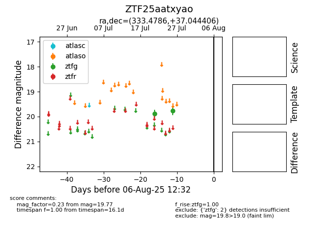

Target ZTF25aatxyao at 2025-08-06 17:07, see:
FINK: fink-portal.org/ZTF25aatxyao
Lasair: lasair-ztf.lsst.ac.uk/objects/ZTF25aatxyao
ALeRCE: alerce.online/object/ZTF25aatxyao
alt names
ZTF25aatxyao (ztf,fink)
coordinates:
equatorial (ra, dec) = (333.4786,+37.04441)
galactic (l, b) = (91.1542,-15.92447)
photometry
last ztfg=19.77
2 ztfg detections
